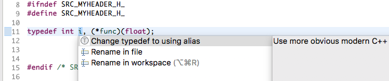
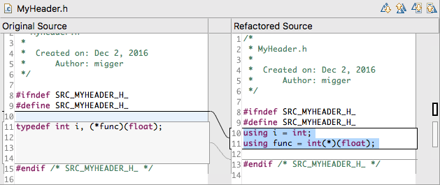

Namespactor¶
Are you getting "colon-blindness" from too many namespace prefixes, or a bad gut feeling because you import all identifiers from namespace std with a using namespace std; directive in all of your C++ files?
Our new namespace refactorings come to the rescue!
Inline Using...¶
Change the identifiers in your code to include their namespace or class prefix by eliminating using namespace directives or using declaration. No doubt, when looking at the source, where a function comes from.
Extract Using Directive¶
A cure against "colon-blindness" might be the refactoring to extract a using directive, e.g., using namespace std; from code pieces that have so many namespace qualifiers, that the code becomes unreadable.
Extract Using Declaration¶
A better solution than a using directive might be a using declaration that allows you to use the short name of something from another scope without relying on explicit qualification of the element, but also without incorporating everything available from another namespace. For example, if you rely heavily on std::cout for output, you can easily declare it once automatically (choosing the refactoring) and stick with cout in your code.
Qualify Unqualified Name¶
When you are in doubt where that name came from and you want to help code readers not relying on a great IDE as the one you are using, just let the IDE provide the scope resolution to your name for your code readers.
Typedef to Alias Declaration¶
In case you would like to replace typedef declarations with the more modern C++11 alias declaration, Namespactor offers a quick assist for this case too. Just place the cursor at the location of the typedef declaration and press Ctrl+1. Select Change typedef to using alias, which will invoke the refactoring. You will see a preview of the change, which can be applied by pressing Finish.


Inline Typedef/Alias Declaration¶
Namespactor supports inlining of typedefs and alias declarations. Select the reference to the name alias you want to replace and press Ctrl+1. Select Inline type alias, which will invoke the refactoring. You will see a preview of the change, which can be applied by pressing Finish.